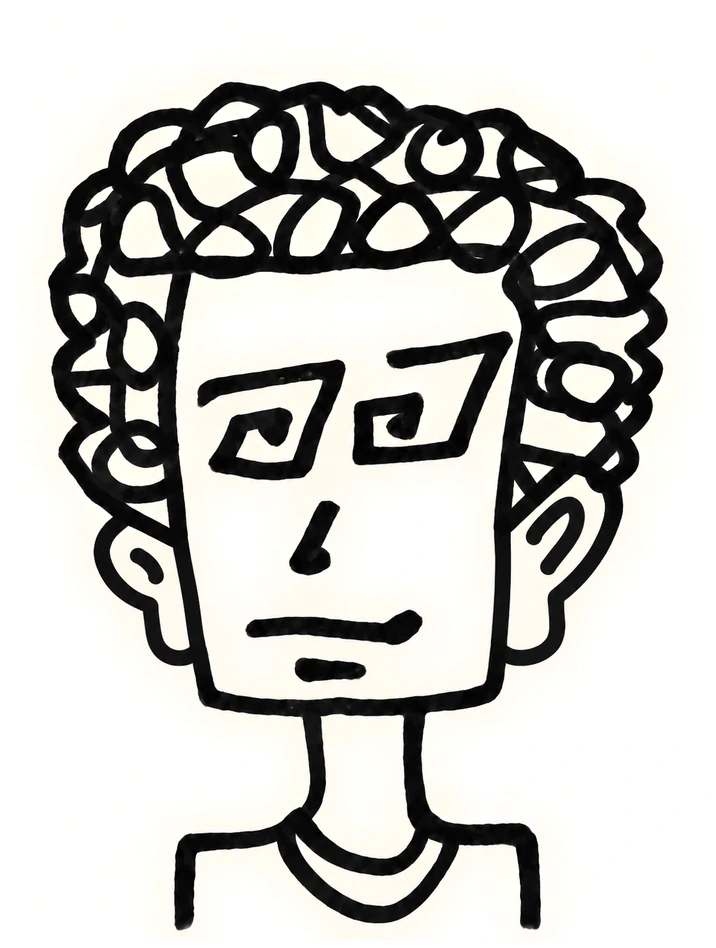

RISE

An immersive browser-based reading environment for focused audiovisual text exploration, combining serial presentation, procedural visuals, and adaptive pacing into a unique user experience.
creative software


I design and build creative software. My work moves between software engineering, human-computer interaction, applied machine learning, and computational art.
The goal of my systems is simple: to make space for thought and, wherever possible, to evoke a strange delight.
Attention is the rarest and purest form of generosity.
An immersive browser-based reading environment for focused audiovisual text exploration, combining serial presentation, procedural visuals, and adaptive pacing into a unique user experience.